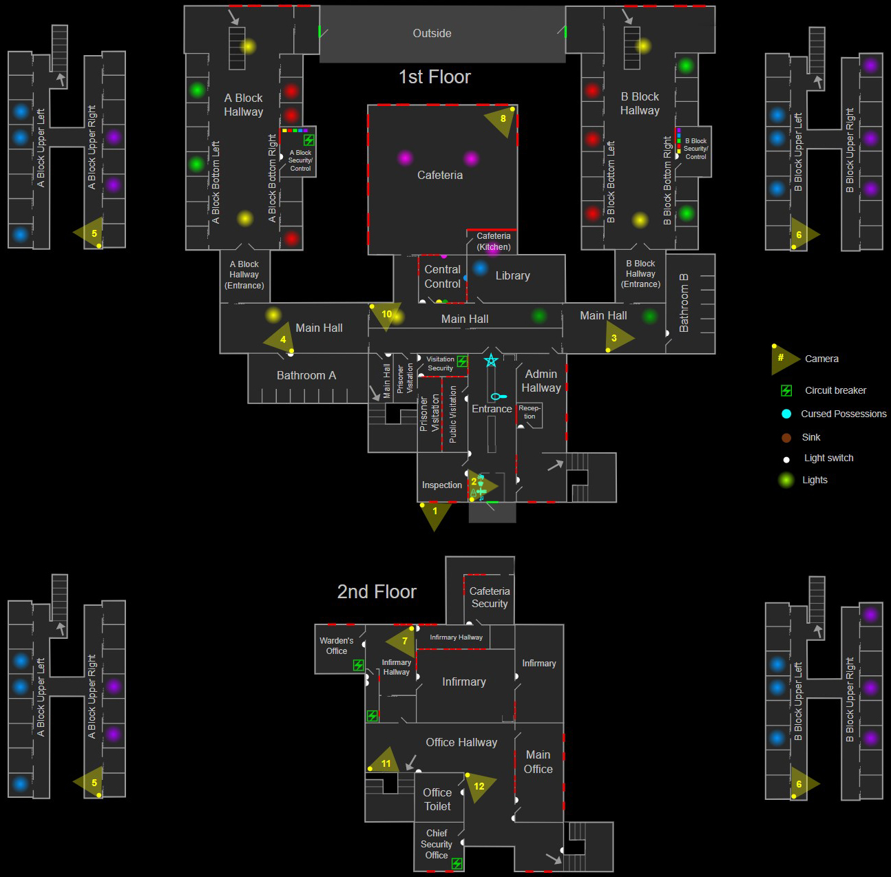

Карта Prison содержит множество помещений, в том числе два тюремных блока со всеми тюремными камерами, офисы различных типов, лазарет, комнаты для свиданий и многое другое. Хотя эта карта немного меньше Brownstone High School, она может быть не менее опасной: безопасное место во время охоты может находиться на большом расстоянии, что требует длительного бега, а место обитания призрака может быть расположена во многих районах, где есть только один или два пути побега, включая перегруженные переходы и целые этажи тюремных блоков. Благовония могут быть необходимы для выживания в таких ситуациях, особенно против призраков с преимуществом в скорости. Во многих частях здания выключатели света расположены в соседних отдельных комнатах, что требует от игроков отходить от них, чтобы управлять освещением локации. Иногда это может привести к путанице с призраком, управляющим переключателями, освещающими другие комнаты.
Prison
Prison — это средняя карта в Phasmophobia, вторая карта такого размера, добавленная в игру. В тюрьме царит полуразрушенная, спартанская обстановка, с длинными коридорами, разделёнными металлическими решетками, из-за которых встречи с призраками нервируют.
Структура

Советы по местоположению
- В конце обоих тюремных блоков есть входные двери, которые ведут в открытый внутренний двор, обеспечивая альтернативный маршрут. Эта внешняя зона также предотвращает пассивную утечку рассудка.
- Каждый тюремный блок состоит из 5 отдельных комнат. Первый этаж состоит из трёх помещений: левого ряда тюремных камер, правого ряда тюремных камер, включая небольшую диспетчерскую, и открытой площадки между ними, которая включает в себя территорию вплоть до внутренних стальных ворот. Второй этаж состоит из двух комнат, равномерно разделенных посередине, с каждым рядом камер в одной комнате.
- Компьютерные клавиатуры в диспетчерских тюремного блока управляют освещением во всём тюремном блоке.
- Две палаты наверху с больничными койками (раздёленные одной дверью) рассматриваются игрой как одна комната под названием «Лазарет» (Infirmary).
- Комната наверху под названием «Коридор лазарета» (Infirmary Hallway) состоит из 4 небольших «подсобных помещений», включая небольшой коридор, ведущий к «Охране столовой» (Cafeteria Security), и маленькую комнату, в которой может находиться источник электропитания.
- Комнаты под названием «Главный коридор» (Main Hallway) и «Офисный коридор» (Office Hallway) не могут быть выбраны в качестве места обитания призрака.
- Выключатель света в главном коридоре находится в центральной диспетчерской.
Укрытия и стратегии
На карте Prison есть 2 комплекта шкафчиков и 2 места для хранения мебели. В зависимости от сложности, некоторые из этих укрытий могут быть заблокированы из-за наличия громоздких предметов или их скрывающие элементы могут быть удалены:
- Любитель: —
- Средняя: ≤ 1
- Профессионал: ≤ 2
- Кошмар/Безумие: ≤ 3
- Игра втроём: +1 открытое укрытие
- Игра вчетвером: +2 открытых укрытия